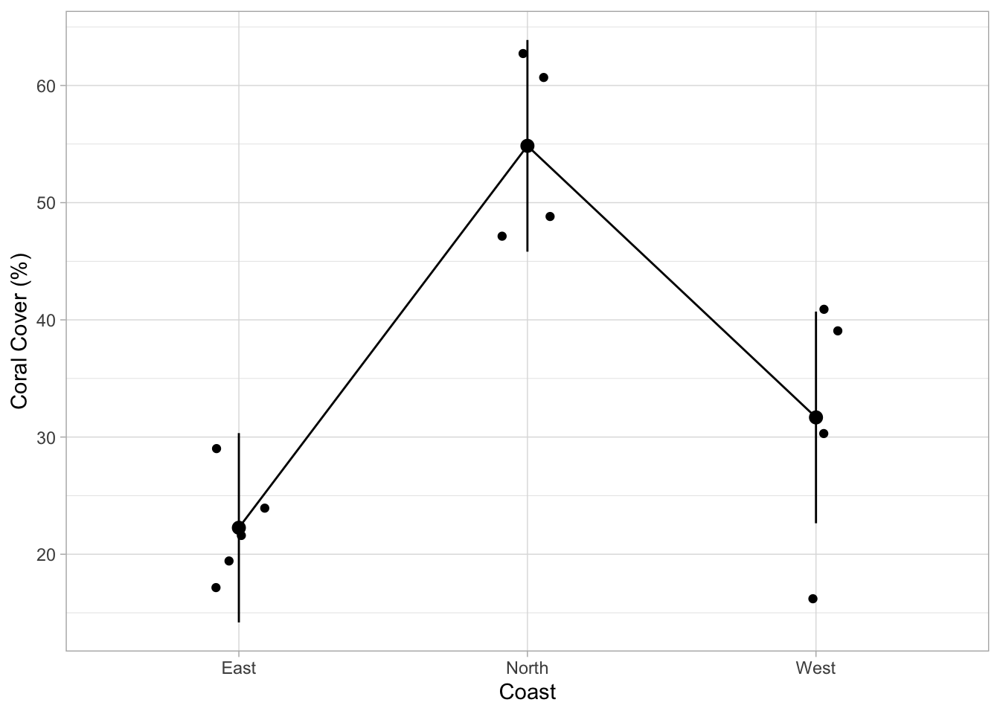
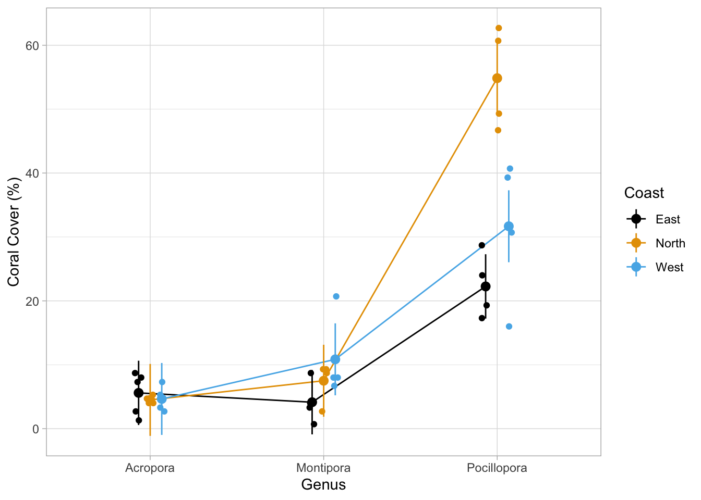
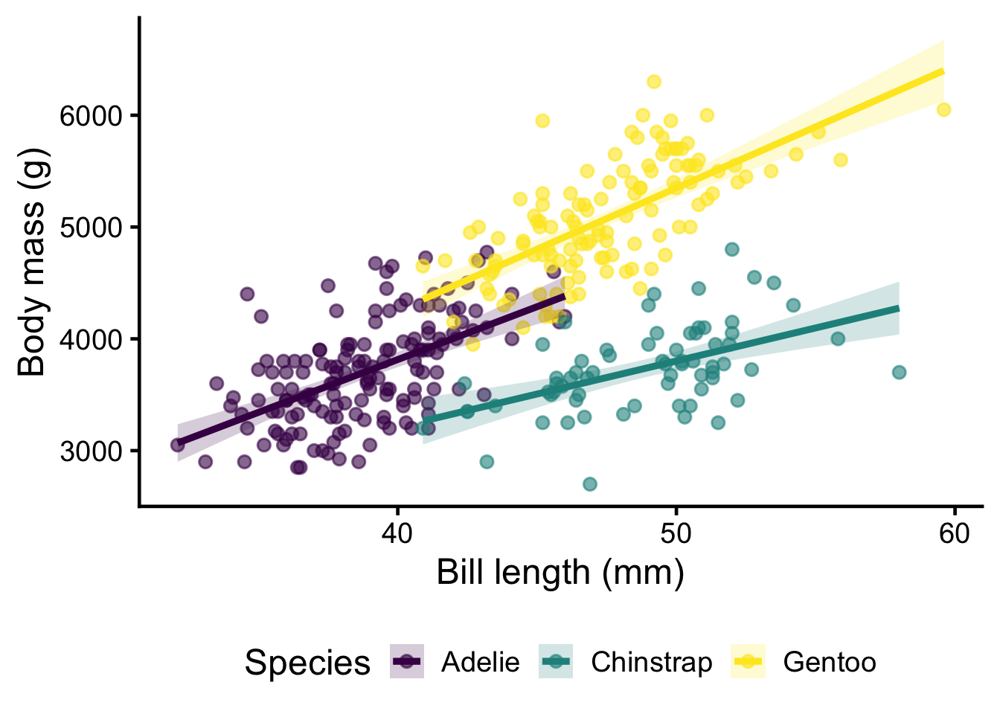
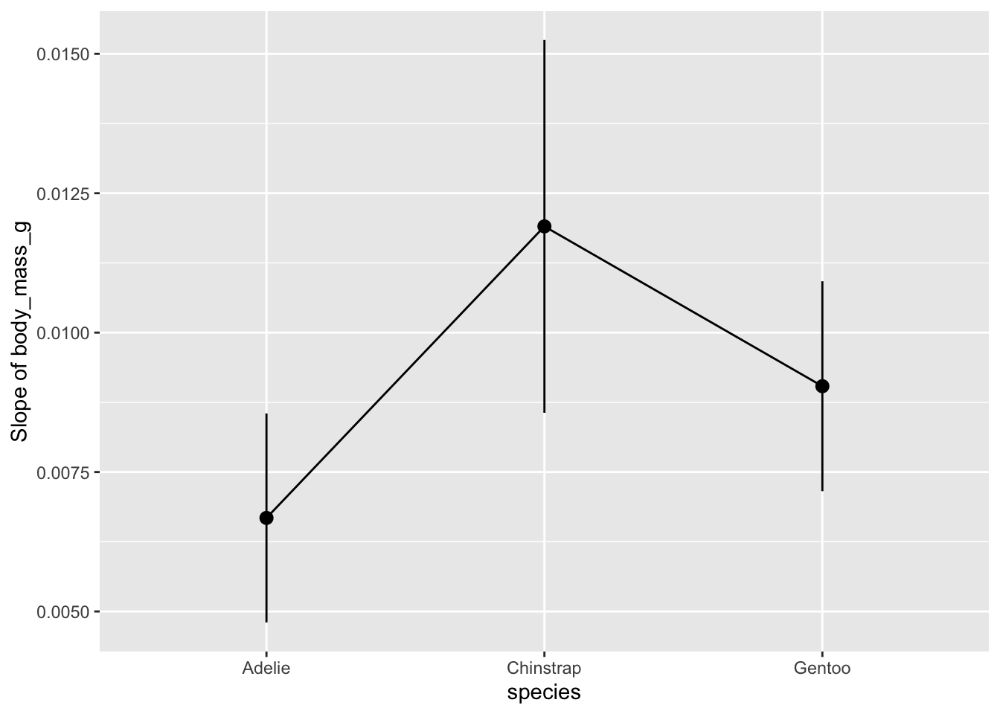

Solution pour TP 04
Partie 1 : Tests post-hoc avec ANOVA
Dans le cours, vous avez appris que lorsqu’une ANOVA montre une différence significative entre les groupes, nous avons besoin de tests post-hoc pour déterminer quels groupes diffèrent les uns des autres.
Utilisons le jeu de données corallien de mon doctorat pour évaluer s’il y avait des différences significatives de couverture de Pocillopora entre les orientations côtières.
Tout d’abord, nous devons lire les données (elles sont stockées dans un dossier data) et sélectionner uniquement les lignes pour Pocillopora :
Tâche 1
Maintenant, nous pouvons créer un modèle linéaire pour tester l’impact de coast sur percent_cover. Remplacez les ____ en conséquence :
m_poci <- lm(percent_cover ~ coast, data = dat_coral_cover_poci)Maintenant, exécutez une ANOVA sur ce modèle :
anova(m_poci)Analysis of Variance Table
Response: percent_cover
Df Sum Sq Mean Sq F value Pr(>F)
coast 2 2431.41 1215.70 18.497 0.0004363 ***
Residuals 10 657.25 65.72
---
Signif. codes: 0 '***' 0.001 '**' 0.01 '*' 0.05 '.' 0.1 ' ' 1Que voyez-vous ? Comment interpréteriez-vous les résultats ?
L’orientation côtière a une incidence significative (p < .001) sur la couverture corallienne.
Tâche 2
Utilisez la fonction estimate_contrasts() du package modelbased pour exécuter des tests par paires sur votre modèle (m_poci) entre toutes les orientations côtières. Tous les packages dont vous avez besoin sont déjà chargés.
estimate_contrasts(model = m_poci, p_adjust = "tukey")We selected `contrast=c("coast")`.Marginal Contrasts Analysis
Level1 | Level2 | Difference | SE | 95% CI | t(10) | p
-----------------------------------------------------------------------
North | East | 32.59 | 5.44 | [ 20.47, 44.71] | 5.99 | < .001
West | East | 9.41 | 5.44 | [ -2.70, 21.53] | 1.73 | 0.242
West | North | -23.18 | 5.73 | [-35.95, -10.40] | -4.04 | 0.006
Variable predicted: percent_cover
Predictors contrasted: coast
p-value adjustment method: TukeyComprenez-vous maintenant mieux comment les groupes diffèrent ?
La couverture corallienne dans le nord est statistiquement significativement plus élevée que dans l’est (p < .001) et l’ouest (p = .006) de Moorea. Aucune différence significative n’a été observée entre la couverture corallienne dans l’est et l’ouest de Moorea (p = .242).
Interprétation : Regardez la sortie. Chaque ligne montre une comparaison entre deux espèces (par exemple, “Adelie vs Chinstrap”).
- La colonne
Differencemontre de combien la couverture de Pocillopora diffère entre les deux côtes (en pourcentage) - La colonne
pmontre la valeur p pour cette comparaison - Si
p < 0.05, cette paire d’espèces est significativement différente
Tâche 3
Pour une publication, on ajouterait le tableau de résultats en Annexe et montrerait les données sous forme de graphique. Pour tracer les données du modèle avec des IC, utilisez la fonction estimate_means() avec votre modèle pour d’abord calculer les estimations du modèle pour chaque groupe, puis utilisez plot(). Rappelez-vous ce que fait %>% : Il prend le résultat d’une fonction (ici, les moyennes estimées) et l’insère dans la fonction suivante (ici, plot()) :
Ce graphique est créé en interne avec ggplot ! Cela vous permet de personnaliser le graphique comme vous l’avez appris auparavant. Vous pouvez superposer les données brutes, modifier les étiquettes et ajouter un thème :
estimate_means(model = m_poci) %>%
plot() +
geom_jitter(
data = dat_coral_cover_poci,
aes(x = coast, y = percent_cover),
width = .1 # defines the spread of the points
) +
labs(x = "Coast", y = "Coral Cover (%)") +
theme_light()We selected `by=c("coast")`.
Ce graphique devrait vous aider à comprendre les résultats dans le tableau ci-dessus. Sur quelle côte la couverture de Pocillopora est-elle significativement différente des autres côtes ? Une seule côte est-elle différente de toutes les autres ?
La couverture corallienne dans le nord est statistiquement significativement plus élevée que dans l’est et l’ouest.
Important : Si une comparaison n’est « pas statistiquement significative » (p > .05), nous ne savons pas si les groupes ne diffèrent réellement pas ou si les données étaient trop variables pour trouver des différences « statistiquement significatives ». Cela ne signifie pas que la moyenne pour ces groupes est la même !!!
Jusqu’à présent, les résultats ne concernaient que Pocillopora. Mais nous avons également des données pour les autres principaux genres de coraux à Moorea. Habituellement, il est préférable d’analyser ces données avec un seul modèle et non avec plusieurs modèles. Ce qui est vrai pour les tests post-hoc par paires est également vrai ici. Si vous exécutez plusieurs modèles ou tests sur les mêmes données, le FWER augmente !
Tout d’abord, nous chargeons les données contenant des informations pour les autres genres également. J’ai supprimé la catégorie « other » ici, car elle contient tous les genres moins courants qui peuvent différer dans leur réponse.
Tâche 4
Créez un modèle pour évaluer l’interaction de coast et genus sur percent_cover.
# Interaction model
m_cover <- lm(percent_cover ~ genus * coast, data = dat_coral_cover_genus)Exécutez une ANOVA sur le modèle :
anova(m_cover)Analysis of Variance Table
Response: percent_cover
Df Sum Sq Mean Sq F value Pr(>F)
genus 2 7362.8 3681.4 121.168 4.268e-15 ***
coast 2 899.7 449.9 14.807 3.362e-05 ***
genus:coast 4 1635.4 408.8 13.457 2.151e-06 ***
Residuals 30 911.5 30.4
---
Signif. codes: 0 '***' 0.001 '**' 0.01 '*' 0.05 '.' 0.1 ' ' 1Tâche 5
Qu’est-ce que cela vous dit ?
Sans tests post-hoc et visualisation, il est difficile d’imaginer ce que le modèle a trouvé. Si l’interaction est statistiquement significative, nous savons que le genre de corail impacte comment l’orientation côtière impacte la couverture corallienne. Mais qu’est-ce que cela signifie ? Exécutez un test post-hoc par paires comme décrit précédemment :
estimate_contrasts(model = m_cover, p_adjust = "tukey")We selected `contrast=c("genus", "coast")`.Marginal Contrasts Analysis
Level1 | Level2 | Difference | SE | 95% CI
------------------------------------------------------------------------------
Acropora, North | Acropora, East | -1.10 | 3.70 | [ -8.65, 6.45]
Acropora, West | Acropora, East | -0.95 | 3.70 | [ -8.50, 6.60]
Montipora, East | Acropora, East | -1.46 | 3.49 | [ -8.58, 5.66]
Montipora, North | Acropora, East | 1.90 | 3.70 | [ -5.65, 9.45]
Montipora, West | Acropora, East | 5.25 | 3.70 | [ -2.30, 12.80]
Pocillopora, East | Acropora, East | 16.66 | 3.49 | [ 9.54, 23.78]
Pocillopora, North | Acropora, East | 49.25 | 3.70 | [ 41.70, 56.80]
Pocillopora, West | Acropora, East | 26.07 | 3.70 | [ 18.52, 33.63]
Acropora, West | Acropora, North | 0.15 | 3.90 | [ -7.81, 8.11]
Montipora, East | Acropora, North | -0.36 | 3.70 | [ -7.91, 7.19]
Montipora, North | Acropora, North | 3.00 | 3.90 | [ -4.96, 10.96]
Montipora, West | Acropora, North | 6.35 | 3.90 | [ -1.61, 14.31]
Pocillopora, East | Acropora, North | 17.76 | 3.70 | [ 10.21, 25.31]
Pocillopora, North | Acropora, North | 50.35 | 3.90 | [ 42.39, 58.31]
Pocillopora, West | Acropora, North | 27.17 | 3.90 | [ 19.22, 35.13]
Montipora, East | Acropora, West | -0.51 | 3.70 | [ -8.06, 7.04]
Montipora, North | Acropora, West | 2.85 | 3.90 | [ -5.11, 10.81]
Montipora, West | Acropora, West | 6.20 | 3.90 | [ -1.76, 14.16]
Pocillopora, East | Acropora, West | 17.61 | 3.70 | [ 10.06, 25.16]
Pocillopora, North | Acropora, West | 50.20 | 3.90 | [ 42.24, 58.16]
Pocillopora, West | Acropora, West | 27.02 | 3.90 | [ 19.07, 34.98]
Montipora, North | Montipora, East | 3.36 | 3.70 | [ -4.19, 10.91]
Montipora, West | Montipora, East | 6.71 | 3.70 | [ -0.84, 14.26]
Pocillopora, East | Montipora, East | 18.12 | 3.49 | [ 11.00, 25.24]
Pocillopora, North | Montipora, East | 50.71 | 3.70 | [ 43.16, 58.26]
Pocillopora, West | Montipora, East | 27.53 | 3.70 | [ 19.98, 35.09]
Montipora, West | Montipora, North | 3.35 | 3.90 | [ -4.61, 11.31]
Pocillopora, East | Montipora, North | 14.76 | 3.70 | [ 7.21, 22.31]
Pocillopora, North | Montipora, North | 47.35 | 3.90 | [ 39.39, 55.31]
Pocillopora, West | Montipora, North | 24.17 | 3.90 | [ 16.22, 32.13]
Pocillopora, East | Montipora, West | 11.41 | 3.70 | [ 3.86, 18.96]
Pocillopora, North | Montipora, West | 44.00 | 3.90 | [ 36.04, 51.96]
Pocillopora, West | Montipora, West | 20.82 | 3.90 | [ 12.87, 28.78]
Pocillopora, North | Pocillopora, East | 32.59 | 3.70 | [ 25.04, 40.14]
Pocillopora, West | Pocillopora, East | 9.41 | 3.70 | [ 1.86, 16.97]
Pocillopora, West | Pocillopora, North | -23.18 | 3.90 | [-31.13, -15.22]
Level1 | t(30) | p
-----------------------------------
Acropora, North | -0.30 | > .999
Acropora, West | -0.26 | > .999
Montipora, East | -0.42 | > .999
Montipora, North | 0.51 | > .999
Montipora, West | 1.42 | 0.881
Pocillopora, East | 4.78 | 0.001
Pocillopora, North | 13.32 | < .001
Pocillopora, West | 7.05 | < .001
Acropora, West | 0.04 | > .999
Montipora, East | -0.10 | > .999
Montipora, North | 0.77 | 0.997
Montipora, West | 1.63 | 0.782
Pocillopora, East | 4.80 | 0.001
Pocillopora, North | 12.92 | < .001
Pocillopora, West | 6.97 | < .001
Montipora, East | -0.14 | > .999
Montipora, North | 0.73 | 0.998
Montipora, West | 1.59 | 0.802
Pocillopora, East | 4.76 | 0.001
Pocillopora, North | 12.88 | < .001
Pocillopora, West | 6.93 | < .001
Montipora, North | 0.91 | 0.991
Montipora, West | 1.81 | 0.673
Pocillopora, East | 5.20 | < .001
Pocillopora, North | 13.71 | < .001
Pocillopora, West | 7.45 | < .001
Montipora, West | 0.86 | 0.994
Pocillopora, East | 3.99 | 0.010
Pocillopora, North | 12.15 | < .001
Pocillopora, West | 6.20 | < .001
Pocillopora, East | 3.09 | 0.088
Pocillopora, North | 11.29 | < .001
Pocillopora, West | 5.34 | < .001
Pocillopora, North | 8.81 | < .001
Pocillopora, West | 2.55 | 0.251
Pocillopora, West | -5.95 | < .001
Variable predicted: percent_cover
Predictors contrasted: genus, coast
p-value adjustment method: TukeyTâche 6
C’est beaucoup de comparaisons (36) ! C’est parce que nous avons utilisé l’interaction entre deux variables explicatives, donc chaque combinaison de genre et de côte est testée contre chaque combinaison de genre et de côte. Pour comprendre les résultats, tracez-les comme avant. Utilisez différentes couleurs pour les différentes orientations côtières et ajoutez les données brutes :
estimate_means(model = m_cover) %>%
plot() +
geom_point(
data = dat_coral_cover_genus,
aes(x = genus, y = percent_cover, col = coast),
position = position_jitterdodge(jitter.width = .1, dodge.width = .21)
) +
labs(x = "Genus", y = "Coral Cover (%)", col = "Coast") +
scale_colour_colourblind() +
theme_light()We selected `by=c("genus", "coast")`.
Note : Si vous êtes intéressé par les parties « plus geek », et ce que fait position_jitterdodge() dans geom_point(), vous pouvez lire ceci, sinon, continuez à lire après la ligne horizontale.
Lorsque vous tracez des effets d’interaction avec estimate_means() %>% plot(), la fonction « décale » automatiquement les points pour différents groupes (dans ce cas, différentes côtes) légèrement à gauche et à droite pour qu’ils ne se chevauchent pas. Cela facilite la visualisation des trois orientations côtières pour chaque genre.
Si nous voulons superposer les données brutes sur ce graphique, nous devons positionner les points de données brutes de la même manière - sinon ils s’empileraient tous au centre de chaque catégorie de genre et ne s’aligneraient pas avec les prédictions du modèle.
C’est là qu’intervient position_jitterdodge() :
dodge : Décale les points horizontalement en fonction de la variable de regroupement (ici :
coast), correspondant au décalage queplot()applique aux estimations du modèlejitter : Ajoute un petit décalage aléatoire à chaque point pour que les points avec des valeurs similaires ne se tracent pas directement les uns sur les autres
Les arguments contrôlent l’ampleur du décalage :
dodge.width = .21: Contrôle la séparation horizontale entre les orientations côtières (doit correspondre au décalage utilisé parplot())jitter.width = .1: Contrôle la quantité de dispersion horizontale aléatoire ajoutée dans chaque groupe de côte
Sans position_jitterdodge(), tous les points de données brutes s’empileraient au milieu et ne correspondraient pas visuellement à leurs estimations de modèle respectives !
Est-il maintenant plus clair quels groupes diffèrent les uns des autres ?
Pensez-vous que toutes les comparaisons qui ont été faites dans estimate_contrasts() sont nécessaires et utiles ?
Comme vous l’avez appris dans le cours, les valeurs p sont « artificiellement » augmentées pour compenser « l’inflation de l’erreur alpha ». Faire tous les tests, comme avec estimate_contrasts(m_cover, p_adjust = "tukey") n’est souvent pas ce que vous voulez. Toutes les combinaisons possibles de côtes et de genre sont testées les unes contre les autres, mais vous pourriez être plus intéressé si la couverture corallienne diffère à chaque niveau de côte, ou s’il y a des différences pour chaque genre entre les côtes. Cela impliquerait beaucoup moins de tests, et la « pénalité » qui est ajoutée aux valeurs p est donc plus faible. estimate_contrasts() nous permet de définir les tests qui sont effectués avec l’argument de fonction by.
Pour tester les différences entre les genres de coraux à chaque niveau de côte, exécutez
estimate_contrasts(model = m_cover, p_adjust = "tukey", by = "coast")We selected `contrast=c("genus", "coast")`.Marginal Contrasts Analysis
Level1 | Level2 | coast | Difference | SE | 95% CI | t(30) | p
-------------------------------------------------------------------------------------
Montipora | Acropora | East | -1.46 | 3.49 | [-8.58, 5.66] | -0.42 | 0.908
Pocillopora | Acropora | East | 16.66 | 3.49 | [ 9.54, 23.78] | 4.78 | < .001
Pocillopora | Montipora | East | 18.12 | 3.49 | [11.00, 25.24] | 5.20 | < .001
Montipora | Acropora | North | 3.00 | 3.90 | [-4.96, 10.96] | 0.77 | 0.724
Pocillopora | Acropora | North | 50.35 | 3.90 | [42.39, 58.31] | 12.92 | < .001
Pocillopora | Montipora | North | 47.35 | 3.90 | [39.39, 55.31] | 12.15 | < .001
Montipora | Acropora | West | 6.20 | 3.90 | [-1.76, 14.16] | 1.59 | 0.265
Pocillopora | Acropora | West | 27.02 | 3.90 | [19.07, 34.98] | 6.93 | < .001
Pocillopora | Montipora | West | 20.82 | 3.90 | [12.87, 28.78] | 5.34 | < .001
Variable predicted: percent_cover
Predictors contrasted: genus
p-value adjustment method: TukeyEt pour tester les différentes côtes pour chaque genre de corail, exécutez :
estimate_contrasts(model = m_cover, p_adjust = "tukey", by = "genus")We selected `contrast=c("genus", "coast")`.Marginal Contrasts Analysis
Level1 | Level2 | genus | Difference | SE | 95% CI | t(30) | p
-------------------------------------------------------------------------------------
North | East | Acropora | -1.10 | 3.70 | [ -8.65, 6.45] | -0.30 | 0.952
West | East | Acropora | -0.95 | 3.70 | [ -8.50, 6.60] | -0.26 | 0.964
West | North | Acropora | 0.15 | 3.90 | [ -7.81, 8.11] | 0.04 | > .999
North | East | Montipora | 3.36 | 3.70 | [ -4.19, 10.91] | 0.91 | 0.639
West | East | Montipora | 6.71 | 3.70 | [ -0.84, 14.26] | 1.81 | 0.182
West | North | Montipora | 3.35 | 3.90 | [ -4.61, 11.31] | 0.86 | 0.670
North | East | Pocillopora | 32.59 | 3.70 | [ 25.04, 40.14] | 8.81 | < .001
West | East | Pocillopora | 9.41 | 3.70 | [ 1.86, 16.97] | 2.55 | 0.042
West | North | Pocillopora | -23.18 | 3.90 | [-31.13, -15.22] | -5.95 | < .001
Variable predicted: percent_cover
Predictors contrasted: coast
p-value adjustment method: TukeyEnfin, revisitons ce modèle que vous avez fait dans le TP précédent :
m_ancova <- lm(flipper_length_mm ~ body_mass_g * species, data = penguins)Exécutez le code suivant pour vous rappeler à quoi ressemblent les données :
penguins %>%
ggplot(aes(
x = bill_length_mm,
y = body_mass_g,
color = species,
fill = species
)) +
geom_point(alpha = 0.6) +
geom_smooth(method = "lm", alpha = 0.2) +
scale_color_viridis_d() +
scale_fill_viridis_d() +
labs(
x = "Bill length (mm)",
y = "Body mass (g)",
color = "Species",
fill = "Species"
) +
theme_classic(base_size = 18) +
theme(legend.position = "bottom")`geom_smooth()` using formula = 'y ~ x'Warning: Removed 2 rows containing non-finite outside the scale range
(`stat_smooth()`).Warning: Removed 2 rows containing missing values or values outside the scale range
(`geom_point()`).
Si vous exécutez une anova() sur ce modèle :
anova(m_ancova)Analysis of Variance Table
Response: flipper_length_mm
Df Sum Sq Mean Sq F value Pr(>F)
body_mass_g 1 51176 51176 1789.0875 <2e-16 ***
species 2 6411 3206 112.0661 <2e-16 ***
body_mass_g:species 2 228 114 3.9837 0.0195 *
Residuals 336 9611 29
---
Signif. codes: 0 '***' 0.001 '**' 0.01 '*' 0.05 '.' 0.1 ' ' 1Regardez le tableau de résultats :
- Si
p < 0.05pour l’interaction : les pentes DIFFÈRENT entre les espèces - Si
p > 0.05pour l’interaction : les pentes ne sont PAS significativement différentes (elles sont similaires)
Puisque l’interaction est significative, il serait intéressant de comparer les pentes entre les différentes espèces. Vous pouvez le faire avec ce test post-hoc :
- Comme avant, la fonction
estimate_contrasts()est utilisée - Nous configurons manuellement que le contraste doit être
body_mass_g, c’est-à-dire notre pente - Nous voulons comparer ces pentes entre (
by) les différentes espèces - Comme avant, nous utilisons l’ajustement tukey
estimate_contrasts(
model = m_ancova,
contrast = "body_mass_g",
by = "species",
p_adjust = "tukey"
)Marginal Contrasts Analysis
Level1 | Level2 | Difference | SE | 95% CI | t(336) | p
------------------------------------------------------------------------------
Chinstrap | Adelie | 5.23e-03 | 1.95e-03 | [ 0.00, 0.01] | 2.68 | 0.021
Gentoo | Adelie | 2.36e-03 | 1.35e-03 | [ 0.00, 0.01] | 1.75 | 0.189
Gentoo | Chinstrap | -2.87e-03 | 1.95e-03 | [-0.01, 0.00] | -1.47 | 0.307
Variable predicted: flipper_length_mm
Predictors contrasted: body_mass_g
Predictors averaged: body_mass_g (4.2e+03)
p-value adjustment method: TukeyRegardez la sortie. Que voyez-vous ?
Seule la pente entre Chinstrap et Adelie est statistiquement significative different (p = .021).
Vous pouvez également tracer les résultats avec le package modelbased. Au lieu de estimate_means(), qui est utilisé pour calculer les moyennes par groupe comme le modèle les voit (dans une ANOVA), nous voulons tracer les pentes, donc nous utilisons estimate_slopes() :
estimate_slopes(model = m_ancova, by = "species") %>%
plot()No numeric variable was specified for slope estimation. Selecting `trend
= "body_mass_g"`.
Cette visualisation correspond-elle à votre attente du tableau estimate_contrasts() ? Quelle(s) pente(s) est/sont différente(s) des autres ?
Vous pouvez constater que le chevauchement de l’intervalle de confiance entre Chinstrap et Adelie est moins important qu’entre les autres espèces.